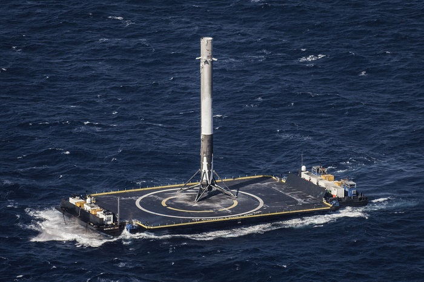

Mission to mars
Making life multiplanetary
-
2016: SpaceX announced plans to fly its earliest missions to Mars
SpaceX announced plans to fly its earliest missions to Mars using its Falcon Heavy launch vehicle prior to the completion, and first launch, of any ITS vehicle
-
2016: Colonization of mars
Since 2016, SpaceX publicly announced a comprehensive vision to begin the colonization of Mars, by proposing to develop a high-capacity transportation infrastructure.
-
2017: Updated vehicle design
On 29 September 2017, Elon Musk announced an updated vehicle design for the Mars mission at the International Astronautical Congress. The replacement vehicle for this mission is called BFR (Big Falcon Rocket). BFR will provide the capability for on-orbit activity like satellite delivery, servicing the International Space Station, Moon missions, as well as Mars missions.
-
2019: Booster tests and orbital testing
The BFR is currently under construction, and is planned to start sub-orbital flight testing in 2019.
-
2020: First cargo mission to mars
The objectives for the first mission will be to confirm water resources, identify hazards, and put in place initial power, mining, and life support infrastructure.
-
2023: Private lunar mission.
On September 17, 2018, SpaceX announced fashion innovator and globally recognized art curator Yusaku Maezawa will be the company’s first private passenger to fly around the Moon in 2023.
-
2024: Second mission: both cargo and crew
Primary objectives of building a propellant depot and preparing for future crew flights. The ships from these initial missions will also serve as the beginnings of the first Mars base, from which we can build a thriving city and eventually a self-sustaining civilization on Mars.
Starship and Super Heavy
Formerly known as BFR, this fully reusable launch vehicle and spacecraft system is in development at SpaceX. The second stage and ship was renamed by CEO Elon Musk to Starship. The first stage was given the moniker "Super Heavy". The payload capacity to Earth orbit is cited as being at least 100,000 kg (220,000 lb), making BFR a super heavy-lift launch vehicle. The first orbital flight will occur no earlier than 2020, with a flight around the Moon slated for 2023. The overall space vehicle architecture includes both launch vehicle and spacecraft, as well as ground infrastructure for rapid launch and relaunch, and propellant transfer in space.
The Technology has been in development for many years. Starship creates the possibilities for new missions, it can already deliver both cargo and people to and from the International Space Station. To make life interplanetery we need to create affordable delivery of significant quantities of cargo and people. The Starship system is designed to ultimately carry as many as 100 people on long-duration, interplanetery flights.
The Technology has been in development for many years. Starship creates the possibilities for new missions, it can already deliver both cargo and people to and from the International Space Station. To make life interplanetery we need to create affordable delivery of significant quantities of cargo and people. The Starship system is designed to ultimately carry as many as 100 people on long-duration, interplanetery flights.